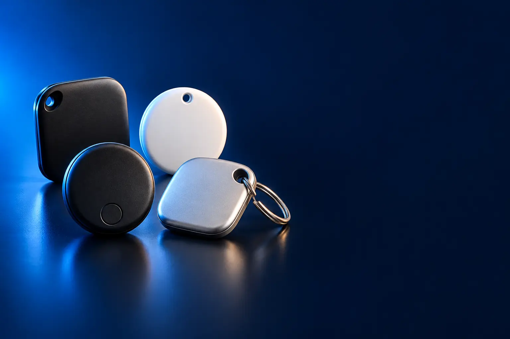

PARA IPHONE (BUSCAR)
Melhor rastreador Bluetooth custo-benefício para iPhone
Aparece no app Buscar, junto com o iPhone e o Apple Watch.

Melhor custo-benefício para iPhoneUGREEN Smart Tag (Find My)
CURADORIA TECHAPROVADO · 2026
Rastreador Bluetooth mostra no celular onde estão chaves, mala ou mochila. Separamos 4 modelos em 2 perfis e dizemos para quem cada um vale a pena.

NOSSA LEITURA
Rastreador de iPhone não funciona no Android, e vice-versa. Escolha primeiro pela marca do seu celular; depois, pela busca precisa e pela bateria.
COMECE POR AQUI
PARA IPHONE (BUSCAR)
Aparece no app Buscar, junto com o iPhone e o Apple Watch.
PARA ANDROID
Para quem usa Android: Xiaomi ou Samsung Galaxy.

A FICHA, TRADUZIDA
01 - REDE
O rastreador não tem GPS. Ele emite um sinal Bluetooth que qualquer celular da mesma rede capta e envia a localização, de forma anônima. Por isso funciona longe de você.
iPhone usa a rede Buscar da Apple; Android usa a rede do Google; celulares Samsung usam a SmartThings Find. Quanto mais celulares da rede por perto, mais preciso.
Em lugares vazios, a última localização pode demorar a atualizar.
02 - BUSCA PRECISA
Alguns rastreadores (AirTag e SmartTag2) têm UWB, que mostra direção e distância no celular, com setas. Ajuda a achar a chave dentro do sofá.
O celular também precisa ter UWB: iPhone 11 ou mais novo e alguns Galaxy topo de linha.
Sem UWB, você usa o alarme sonoro para achar de perto.
03 - BATERIA
A maioria usa bateria de moeda CR2032, que dura cerca de 1 ano e é fácil de trocar. O app avisa quando está fraca.
Modelos com bateria substituível duram muitos anos; os recarregáveis precisam de carga a cada poucos meses.
Guarde uma bateria reserva: custa pouco e é vendida em supermercado.
04 - SEGURANÇA
Os rastreadores certificados avisam um celular próximo se um rastreador desconhecido estiver andando com ele, para evitar perseguição.
Para pets, use o rastreador só como apoio: ele depende de celulares por perto e não é GPS em tempo real.
Se um aviso de rastreador desconhecido aparecer no seu celular, siga as instruções do app para localizá-lo.
A CURADORIA EM DETALHE
4 modelos da pesquisa
PERFIL · 2 MODELOS, DA ENTRADA AO TOP DE LINHA
Os rastreadores compatíveis com o app Buscar (Find My) da Apple usam a rede de iPhones do mundo inteiro para mostrar onde estão suas chaves, mochila ou mala. Só funcionam com iPhone e iPad.
IPHONE · CUSTO-BENEFÍCIO 1 de 2
Melhor custo-benefício para iPhone
Certificado Find My · bateria substituível · alarme
Ver preço na AmazonPOR DENTRO DA ESCOLHA
Rastreador com certificação oficial Find My da Apple: aparece no app Buscar do iPhone, iPad e Mac. Tem bateria substituível e certificação de segurança UL 4200A.
Usa a mesma rede do AirTag para localizar à distância.
| Compatível | iPhone (app Buscar) |
|---|---|
| Bateria | Substituível |
| Busca precisa | Não |
Fonte: ficha e descrição do anúncio, conferidas em 02/11/2026. Dados informados pelo fabricante.

IPHONE · TOP DE LINHA 2 de 2
Top de linha para iPhone
Busca precisa · som 50% mais alto · Apple Watch
Ver preço na AmazonPOR DENTRO DA ESCOLHA
O rastreador da Apple, com busca precisa de maior alcance no iPhone e no Apple Watch (setas que apontam o caminho até o objeto) e alto-falante com som 50% mais alto.
A busca precisa é o diferencial: além do mapa, o iPhone mostra direção e distância.
| Compatível | iPhone (app Buscar) |
|---|---|
| Busca precisa | Sim, maior alcance |
| Som | 50% mais alto |
Fonte: ficha e descrição do anúncio, conferidas em 02/11/2026. Dados informados pelo fabricante.
PERFIL · 2 MODELOS, DA ENTRADA AO TOP DE LINHA
Para Android, os rastreadores usam a rede do Google (Encontre Meu Dispositivo) ou, no caso da Samsung, a rede SmartThings Find dos celulares Galaxy. Confira a compatibilidade com o seu celular.
ANDROID · CUSTO-BENEFÍCIO 1 de 2
Melhor custo-benefício para Android
Bluetooth · alerta sonoro · compacto
Ver preço na AmazonPOR DENTRO DA ESCOLHA
Localizador Bluetooth compacto e leve da Xiaomi, com alerta sonoro para achar chaves, mochilas, bolsas e malas.
A opção mais acessível de marca conhecida para Android.
| Compatível | Android |
|---|---|
| Alerta | Sonoro |
Fonte: ficha e descrição do anúncio, conferidas em 02/11/2026. Dados informados pelo fabricante.

ANDROID · TOP DE LINHA 2 de 2
Top de linha para Android
Bluetooth + UWB · IP67 · bateria de 1,5 ano
Ver preço na AmazonPOR DENTRO DA ESCOLHA
Rastreador da Samsung com Bluetooth e UWB (busca precisa em celulares Galaxy compatíveis), resistência IP67 a água e poeira e bateria de até 1,5 ano.
A rede de celulares Galaxy ajuda a achar à distância.
| Compatível | Samsung Galaxy |
|---|---|
| Busca precisa | UWB, em modelos compatíveis |
| Proteção | IP67 |
Fonte: ficha e descrição do anúncio, conferidas em 02/11/2026. Dados informados pelo fabricante.
Nenhum modelo encontrado. Tente outro termo ou volte para Todos.
LADO A LADO
| Modelo | Perfil | Posição | Compatível | Destaque |
|---|---|---|---|---|
| UGREEN Smart Tag (Find My) | iPhone | Custo-benefício | iPhone (app Buscar) | Certificado Find My · bateria substituível · alarme |
| Apple AirTag (2ª geração) | iPhone | Top de linha | iPhone (app Buscar) | Busca precisa · som 50% mais alto · Apple Watch |
| Xiaomi Tag | Android | Custo-benefício | Android | Bluetooth · alerta sonoro · compacto |
| Samsung Galaxy SmartTag2 | Android | Top de linha | Samsung Galaxy | Bluetooth + UWB · IP67 · bateria de 1,5 ano |
CONSIDERAÇÕES FINAIS
Rastreadores importados pela Amazon Global e anúncios com uma unidade em estoque ficaram de fora. A categoria tem poucos modelos de marca, por isso cada perfil tem dois.
O UGREEN Smart Tag para iPhone e o Xiaomi Tag para Android.
Não para rastrear. Um Android só consegue identificar um AirTag perdido por perto.
Não. Ele usa a rede de celulares próximos para mostrar a localização.
Como apoio, sim, mas não é GPS em tempo real.
Porque ele muda várias vezes por dia. O botão leva ao valor atualizado na loja.
TRANSPARÊNCIA EDITORIAL
Separamos os rastreadores pelo celular com que funcionam, que é o que define a compra. Cada modelo precisa responder com clareza "para quem ele é o certo".
Em cada perfil há modelos em faixas de preço diferentes, e cada degrau precisa entregar algo que o anterior não entrega. Dois modelos com a mesma proposta não entram juntos.
Ficha e especificações foram conferidas nos anúncios das lojas em 02/11/2026.
Os links de compra desta página são de afiliado: se você comprar por eles, o TechAprovado pode ganhar uma comissão, sem custo adicional para você. Isso não muda a ordem nem a escolha dos produtos.
📲 GUIAS E DICAS NO SEU FEED
Dicas práticas antes de comprar, em carrosséis e vídeos curtos, sempre com link para o guia completo.